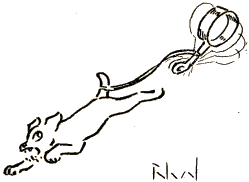
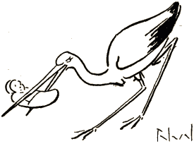
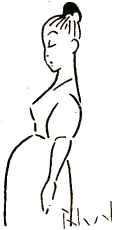

En tiu temp' ni estis bando
Ne el paper', ne el kartono,
Ne kiel kotiljongirlando,
Sed brava band' el fajroŝtono.
Hej, kiel ŝprucis la fajreroj,
Se kun filistroj ni petolis!
Knabinoj virtaj en kameroj
Sin riglis dum ni preterbolis.
Kokritaj edzoj nin rigardis
Okulminace kaj detrue
Kaj siajn edzinetojn gardis
Pli bone nun, sed tro malfrue!
La mastroj de diboĉbutikoj
Nin timis kiel nigran peston,
Ĉar ni porpage per urtikoj
Al ili tiklis la post... keston.
La hundoj de l' kvartalo same
Evitis niajn noktpatrolojn,
Se ne, ĝis la mateno lame
Ili posttiris kaserolojn.

Finiĝis fars', ― la tempo pasis,
Ni burĝe portas nun titolojn,
La Viv' de longe jam frakasis
Tiamajn revojn kaj idolojn ...
* * *
Antaŭ nelonge ni retrovis
Nin ĉiujn ĉe amik' komuna
Kaj vane komplimenti provis
Reciprokante: „ Ĉiam juna! “
Ĉar la tempiojn ― sen riparo ―
Anserpiede stampas faldoj,
Kaj la ĉapitro de l' hararo
Prezentas sin kun debetsaldoj.
Jen kiu per avida ŝmaco
Fumadis dum studentaj jaroj
La remburherbojn de l' matraco,
Nun pompas kun baroncigaroj;
Alia, kiu tro aŭdace
Konstruis sur epikurismo,
Nun marŝas peze, kaj grimace
Li plendas jam pri reŭmatismo;
La tria, kiu cikoniojn
Asistis dum noktvivo peka,
Nun pie flustras litaniojn
Kaj hejmeniras je la deka;

La kvara vivis per pruntpreno
Aŭ dank' al senprovizaj ĉekoj;
Nun estas lia entrepreno:
Pruntdoni kontraŭ hipotekoj!
Ve! kamaradoj, jam aŭtune
Pri l' vintro nin avertas signoj;
Ni baldaŭ kantos ĉiuj kune
La faman kanton de la cignoj.
* * *
Ni maljuniĝis, evidente,
Sed pleje maljuniĝis tiu,
Kiu admonis nun lamente,
Ke ni ne tiel laŭte kriu,
„ Ĉar, “ diris li al ni konfide,
„ Filino mia min ĉagrenas,
Ŝi ... plidikiĝas tro perfide,
Kaj tion mi ne plu komprenas... “

„ Ho, kara nia, “ tuj ni ĥoris,
„ Vi kadukiĝis efektive:
Bruligi, kion vi adoris,
Signifas morti jam dumvive! “